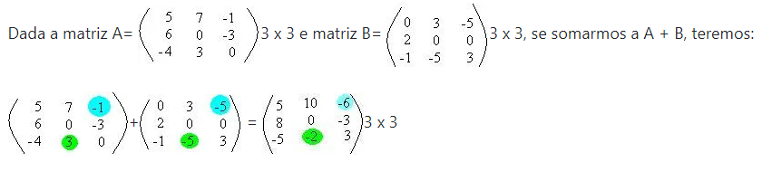

PRODUTO DE MATRIZES (ADIÇÃO)
RÁPIDA INTRODUÇÃO
"A operação com qualquer matriz sempre resultará em outra matriz, independentemente da operação utilizada.
Antes de falarmos da adição e da subtração de matrizes, iremos relembrar do que uma matriz é formada:
toda matriz tem seus elementos que são dispostos em linhas e colunas.
A quantidade de linhas e colunas deve ser maior ou igual a 1. Cada elemento vem representado com a linha e a coluna que pertence.
Exemplo: Dada uma matriz B de ordem 2 x 3 o elemento que se encontra na 1º linha e 2° coluna será representado por b12."
Adição
"As matrizes envolvidas na adição devem ser da mesma ordem. E o resultado dessa soma será também outra matriz com a mesma ordem."
"Assim podemos concluir que:
"Se somarmos a matriz A com a matriz B de mesma ordem, A + B = C, teremos como resultado outra matriz C de mesma ordem e paraExemplos:
"Observe os elementos em destaques:
"O mesmo ocorre com os outros elementos, para chegarmos ao elemento c32,
tivemos que somar a32 + b32. Pois, 3 + (-5) = 3 - 5 = - 2".
"Assim: A + B = C, onde C tem a mesma ordem de A e B."